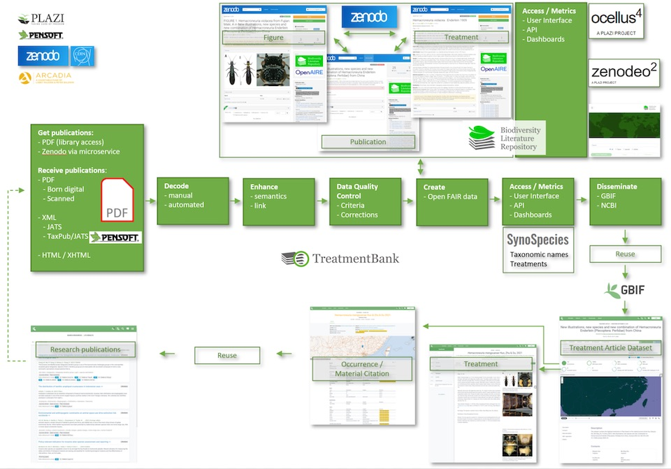

Hindsight is 20x20000

Three years ago we set off on a journey, guided by a philosophy that scientific data trapped in scholarly articles should be free, powered by the creativity and hardwork of a small team scattered around the globe, and supported by Arcadia Fund that decided to invest in our vision. Earlier this month we completed that journey, by all measures, a success. We liberated more data than we set out to liberate, we ended up with more partners than we started with, and we empowered more publications and publishers than three years ago. Data liberated by us is already being used by scientists to ask and answer new questions, to pursue new science – a true scientific data lifecycle in constant motion. <Ross’s quote here>
We are in danger of speaking with less humility than we should, but we are justifiably proud that not only did we do everything we aimed and claimed to do, all of it is visible. While there may be occasional dead links that we will endeavor to fix, there are no smoke and mirrors, there is no empty promise. With Arcadia’s support, we liberated almost 400,000 taxonomic treatments, and every one of them is available at Zenodo and GBIF and TreatmentBank and Biolit Repo and Zenodeo and Synospecies and Ocellus, for anyone to use, anywhere in the world, for any purpose they wish.